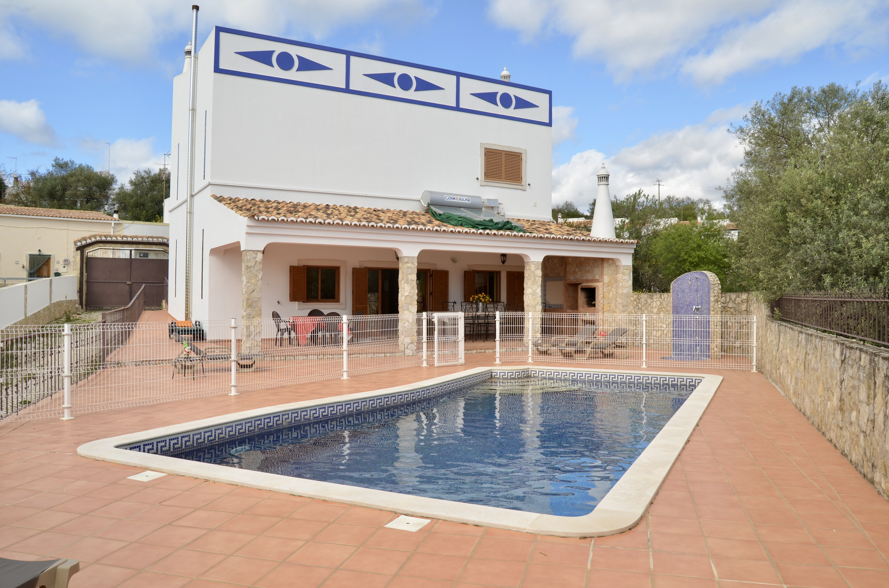
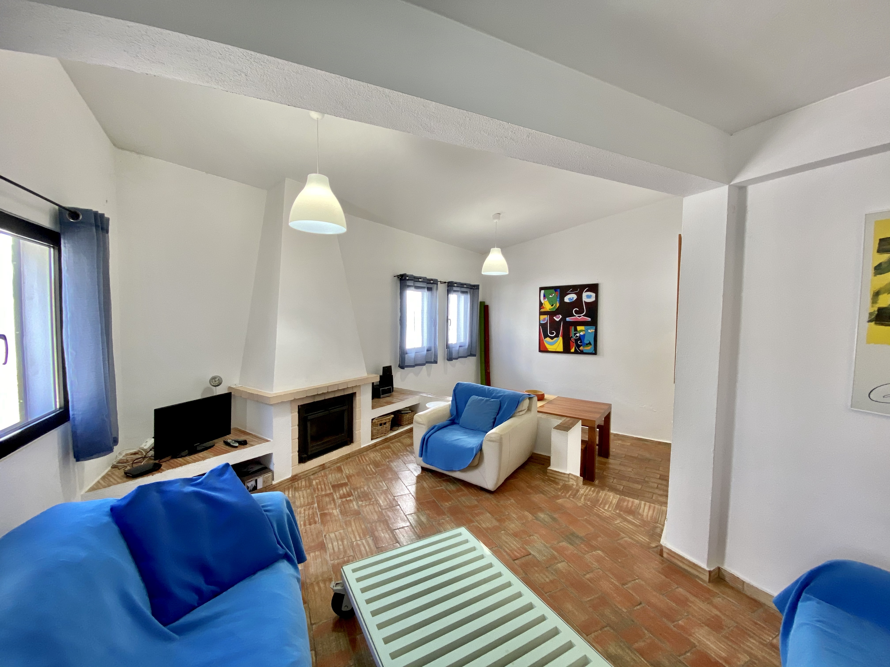
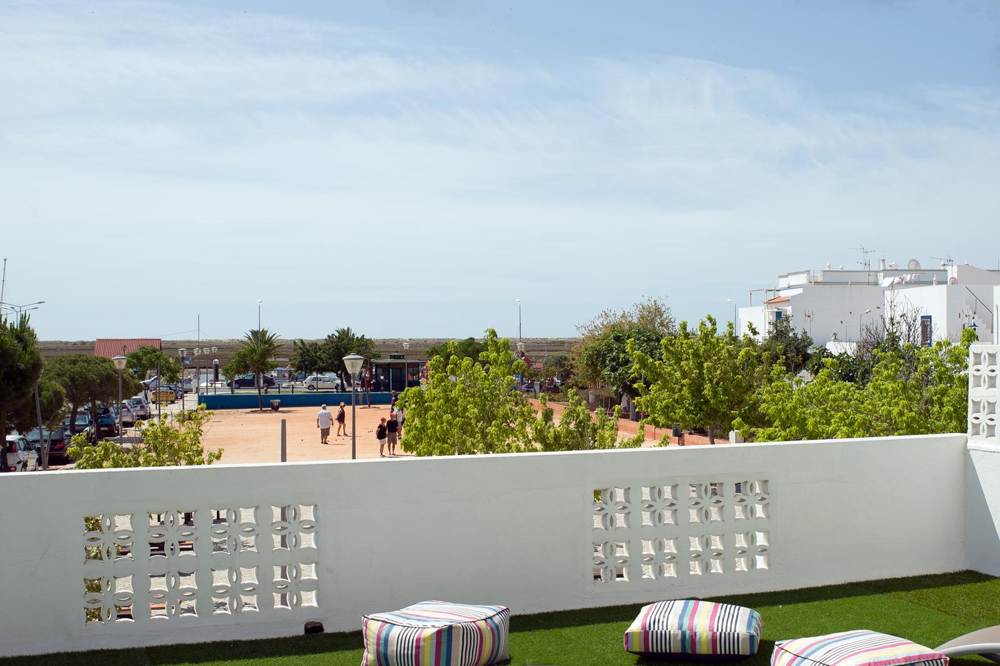

Villa Irene – Almancil
Moradia para até 13 pessoas, com 5 quartos, piscina, BBQ e área de lazer (ping pong, matraquilhos, basquetebol). Perto da Quinta do Lago.
Ver detalhes

Villa da Tôr – Tôr, Loulé
4 quartos (todos ensuite), piscina protegida, zona tranquila ideal para caminhadas e visitas à Quinta da Tôr. A 5 min de Loulé.
Ver detalhes
Casa 22 – Vale do Lobo
3 quartos, 2 casas de banho, rooftop com churrasco, perto da praia e da Praça. Ideal para famílias e grupos de golfe.
Ver detalhes

Casa 12 – Vale do Lobo
3 quartos, 2 casas de banho, cozinha equipada, ar condicionado e Wi-Fi. Localização privilegiada perto da praia.
Ver detalhes

Casa de Santa Luzia – Tavira
Moradia encantadora em Santa Luzia, com rooftop acolhedor para churrascos e vista para a ria. Detalhes completos em breve.
Ver detalhes